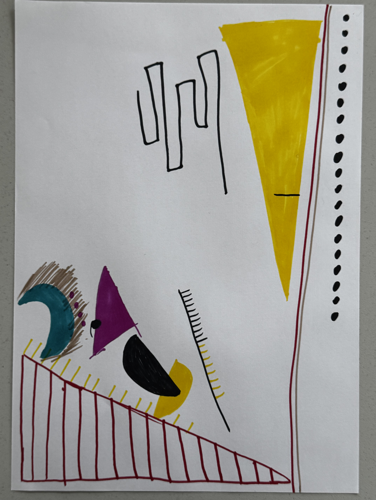

Hart's Portfolio for Introduction to Creative Computing.
This week I learned how to use the p5.js Web Editor and GitHub. At first, I tried the Copy Image Data example, but it did not work because some image files were missing. Then I changed to the Color example and it worked successfully. I also learned how to save my sketch and put the link on my GitHub portfolio. GitHub was a little difficult for me at first because I had never used it before, but now I understand the basic process better.

Today I learned about binary numbers, and I found it quite difficult and confusing. We also watched a video about a butterfly and the process of improving it again and again. I found it very interesting because I think learning is about making mistakes, correcting them and getting better step by step. Finally, we used drawing to create a Data Self Portrait, which was like introducing ourselves through shapes, colours and data. Maybe this is also a way to start thinking about how programming can represent information. I learned a lot today and really enjoyed the class, although I almost fell asleep while watching the videos.
In this project, I used p5.js to recreate a simplified version of my desktop wallpaper. I used basic shapes, lines and transparency to draw a tree, a railing and reflections in the water.
Before coding, I drew my idea on paper.

View my Draw, then Code project
Today, I finished my Draw, then Code project using p5.js. I learned that trying different ideas and making mistakes are important parts of creative coding.
I also realised that creative coding requires more maths than I expected. If I could calculate the exact positions and coordinates of shapes and lines on the canvas, it would be much easier to create what I want, instead of changing numbers again and again.
I think I need to improve my maths skills to become better at creative coding.